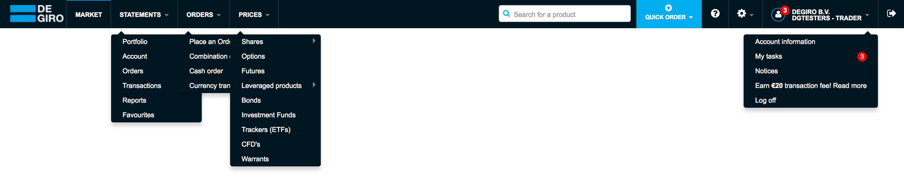
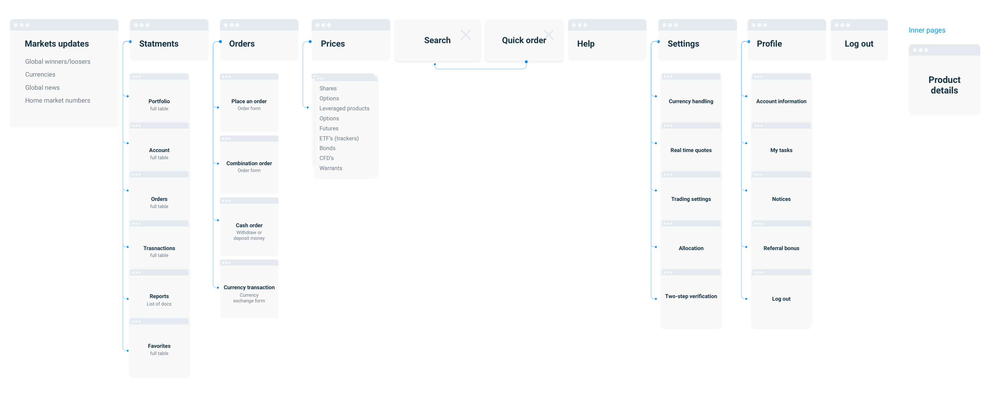
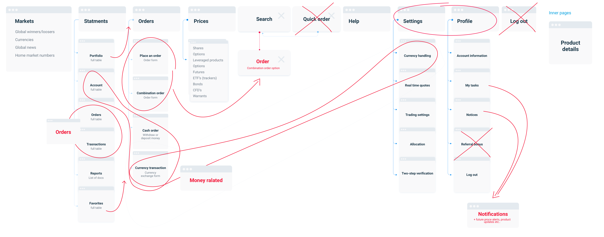
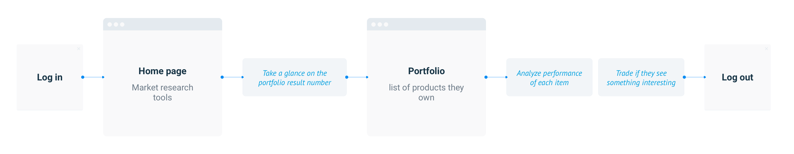
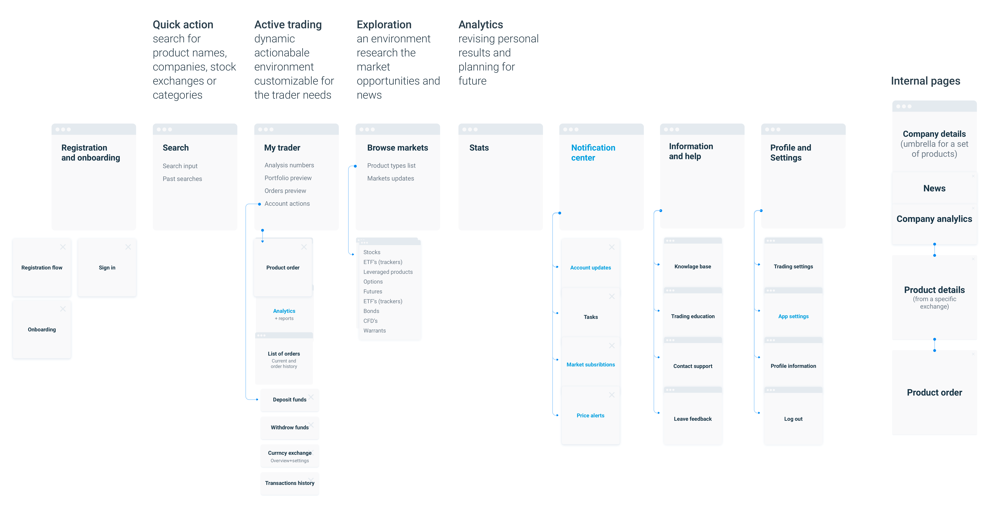

January 2018
Part 2.
Architecture and navigation
It is essential to have a view from the top, where you could see the core parts of the product at once and connections between them. I call it a product architecture. Having this properly thought through and logically structured will help to create a meaningful navigation, the backbone of the Product.
“Think big, start small”
Product architecture
I have started with analyzing the current solution. It was built feature after feature, most probably by different people, not considering much how it is going to be used and evolved in future.
Here is the top navigation of the web app, and it's schematic representation below.
 Just looking at this map easy to see some possible improvements. I was trying to simplify it first, got rid of some noise, like doubled "Log out" and almost same functionality for Search and Quick order. Some pages were merged, for example, orders in progress were named like Orders, and the past one - Transactions, accordingly located on two different pages. It would make more sense to leave only one entity - Order - and assign different states to it - Open, in Progress, Expired, Closed etc.
After I started re-combining pages and actions into logical groups. For example, all money related actions were spread out through the whole navigation. There were 3 different pages related to Currency exchange: Cash funds overview accessible from the status section on every page, Currency exchange settings accessible from Settings section, and Currency Transactions that were located to Orders section with no clear reason. Eventually, I have elegantly combined all those screens into one. Deposit and Withdraw money, on the other hand, were squeezed into one page. Money flow history was hidden in Portfolio section. Eventually, all money related screen and actions were allocated to one section.
Brainstorming on the current product architecture
User flows
The next step was to analize different user flows. I have already mentioned that users tended to skip the home page that showed the Global Markets information, switching immediately to their Portfolio. These two screens would logically belong to two different flows: Markets page was build to help users explore new possibilities and get a quick view to the global numbers, the Portfolio tells about performance of products they own. So here we have two independent journeys - Analysis of existing portfolio and Search for new opportunities. Therefore I have distinguished two sections - My trader, that included all information and actions specific for the user, and Browse markets including the research functionality.
The current user journey

Optimised user journey
Future functionality
Another aspect to keep in mind when you are working on the architecture - the possible future functionality. Of course itis impossible to predict the exact evolution of what you are building, but the more time you invest in it at the beginning, the more prepared you will be. Notification Center was one of the functions that can't be developed fully yet, but something that will be definitely necessary at some point. Moreover, there are things that logically can already belong to the notification Section - such as Tasks (when a user is requested to provide legal details). Later on, we can add all types of updates, user subscriptions, price alerts etc. It is better to add the Notification Center and keep the functionality limited earlier, so we will not have to look for place and re-educate people later.
New architecture
The final (at this moment) map you see below is the result of several loops of my design workflow when I have created wireframes and mockups for many intermediate versions that were tested proven to be imperfect.

Optimised architecture. Blue titles - new functionality.
Navigation
Navigation is the backbone of any product. I will not tell about the value of simple and intuitive navigation, there are hundreds of article written about it.
Responsivness
From the beginning, we knew that we are going to build a responsive web app from scratch so I had to design keeping at least three possible layouts in mind. We ended up with five of them - Desktops, Laptops, Tablets, Mobiles in portrait and landscape orientation.

Switching across platforms has to be as seamless as possible, many traders would use up to 3 devices on a regular bases, sometimes they will stretch the browser onto 2 HD displays, other times they will want quickly react using their phone in the metro. Often Mobile apps and their desktop alternatives have very different navigation logic, not mentions that functionality can be limited as well. Every time you switch the device, you need to learn using it again, you remember where one button was placed on the web version, but on the mobile version, it just does not exist.
Here comes the value of having a little number of sections - it is not only easy to navigate and remember, but also scales down easily. We limited ourselves to five items- that's what we want to keep visible in the smallest devices.
Layout. No hamburgers.
Choosing the layout was the next big decision to make. Currently the most popular solution and what we currently have is top navigation that shrinks into hamburger on mobiles. Hate it! It is horrible: the size of section depends on a section name size (and we have German to support!), there will be always the resolution that it does not fit or will look way too empty, if make it fixed - it will eat the space that could use to show more lines of text. And the hamburger is a different story, it's hidden, harder to keep the content hierarchy inside it, because there is no limit for a number of items - it will end up to be a long long list.
Our solution was to use side navigation for bigger screens and bottom iOS-style navigation for smaller ones.
The desktop navigation was meant to be fixed to the side. So yes, it would eat that space that could be used for something else. But is it really a problem? Most of the laptop screens are horizontally oriented, so you would balance the viewport by reducing the width rather than size (remember MS Word 2003 Toolbar?). Second, remember that in most of the websites you get huge side margins? Wide lines of content are harder to perceive, even in old books you can find text distributed into several columns. So we would leave that space empty anyway.
The biggest concern was using the icons versus text. Fixing section titles on the side was not the option, then we would take way too much space, we would depend on the word size (aha, German will take more than Chinese), and it would take way to much attention when it is not necessary. People do not need read the navigation at any single moment.
Luckily there are not that many desktop devices that are touch only, so we can rely on hover actions to show tooltips to explain icons. The benefit of having fewer section plays a big role here too - people need to remember just a few icons, probably they will remember it the first time they try the app. We can also show sub navigation for some sections.
On the other hand, we keep the text for mobile devices, but luckily we only have four words to display.